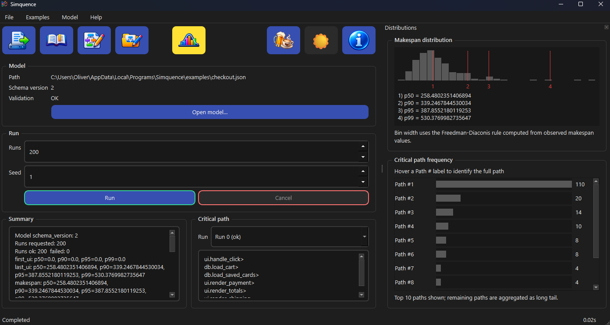
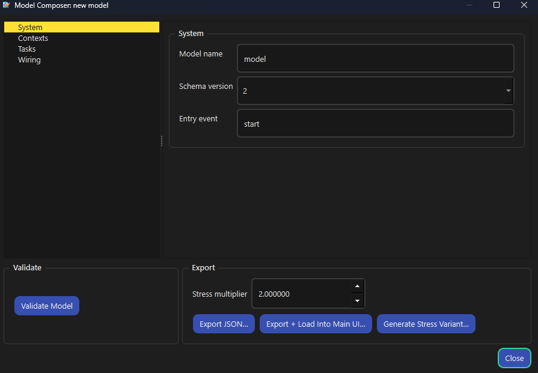
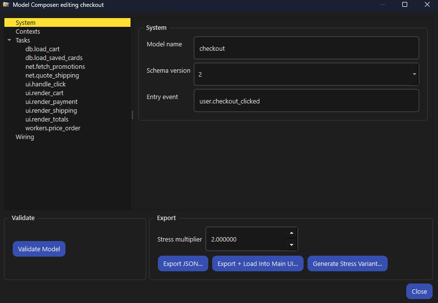

Simquence
SimquenceFind the latency problem before it is politically expensive
Profilers explain what happened in a running system. They rarely explain why the user waited.
Explicit models
Your architecture written down. Nothing is inferred and nothing is hidden; the model is what you reason about.
Many seeded runs
The spread across hundreds of runs is the finding. Every run is seeded, so results reproduce across versions.
Critical paths and percentiles
Critical paths name the work that held each run up. Percentiles are split: UI events say when the interface responded; makespan says when the whole piece of work finished.
Yours, on your machine
Plain JSON in, plain text out. No account, no server, no instrumentation of production code.
It shows what the model produced and nothing it did not
Intentionally literal: what ran, how often and where time accumulated. Fully keyboard navigable.



Install it and run the shipped example
One installer per platform, no administrator rights. Examples, Checkout, Run: a distribution and a critical path inside a minute.
Underneath is a Python library with a CLI. The CLI writes the three files below; the desktop app exports the same results as a zip of text files.
summary.jsonAggregate latency and contention statistics for the whole run.
runs.csvPer-run metrics, suitable for analysis or plotting.
trace.csvOptional per-task-instance timing and causality data.
Where to next
Every page answers one question.